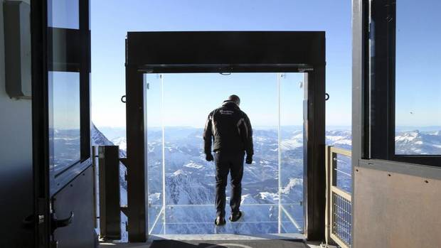
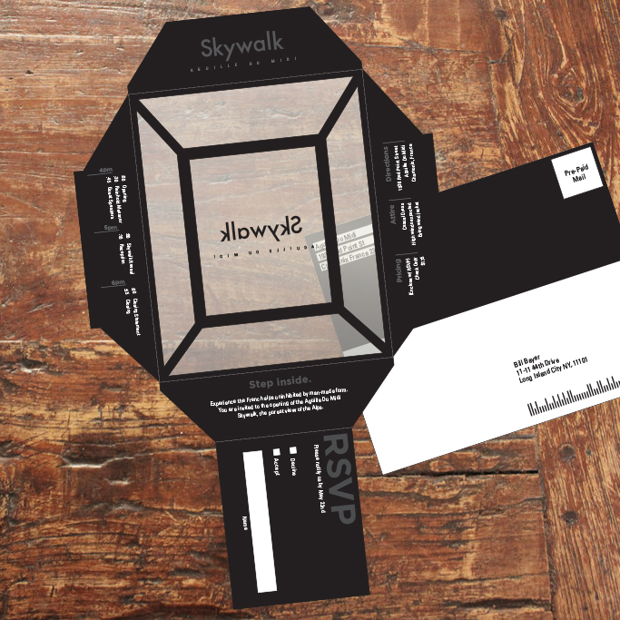
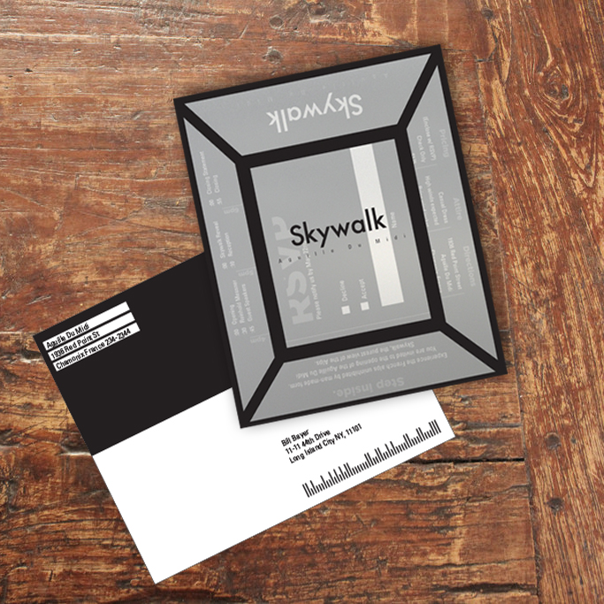
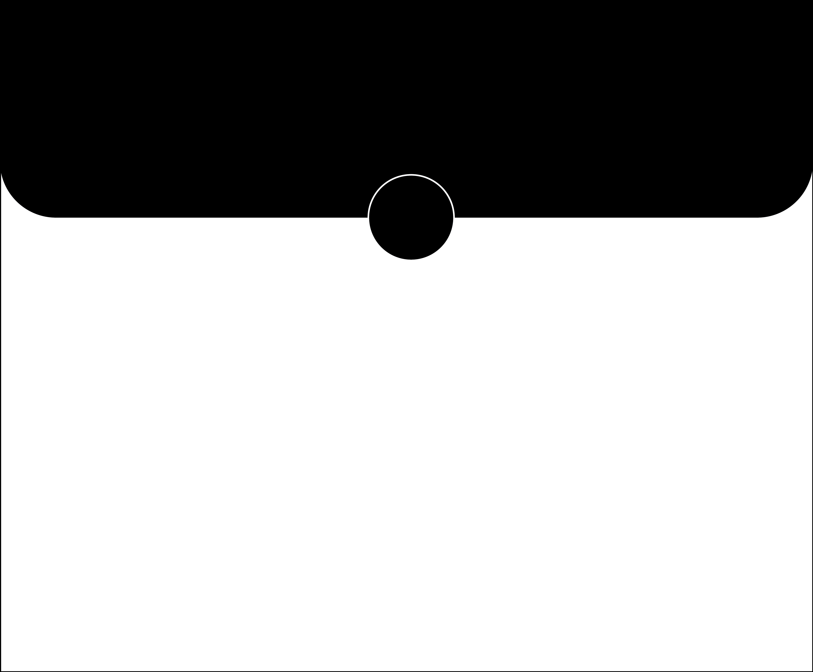
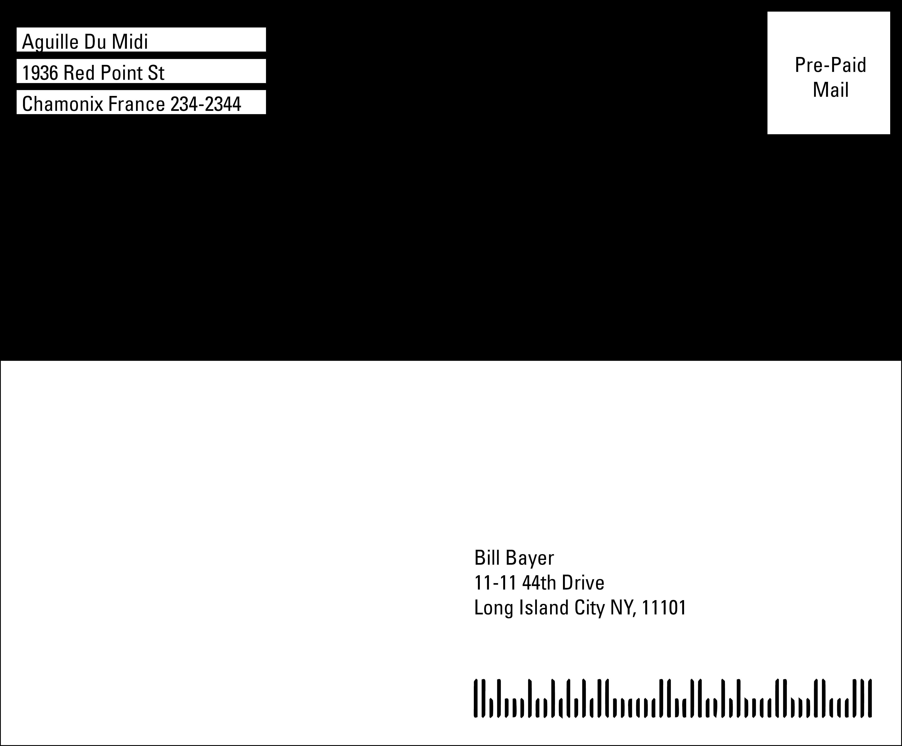
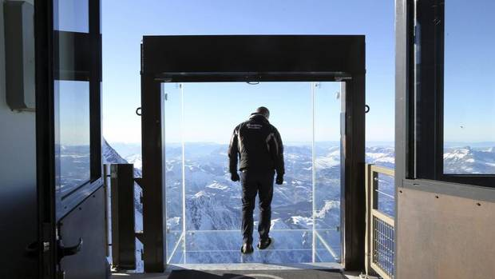
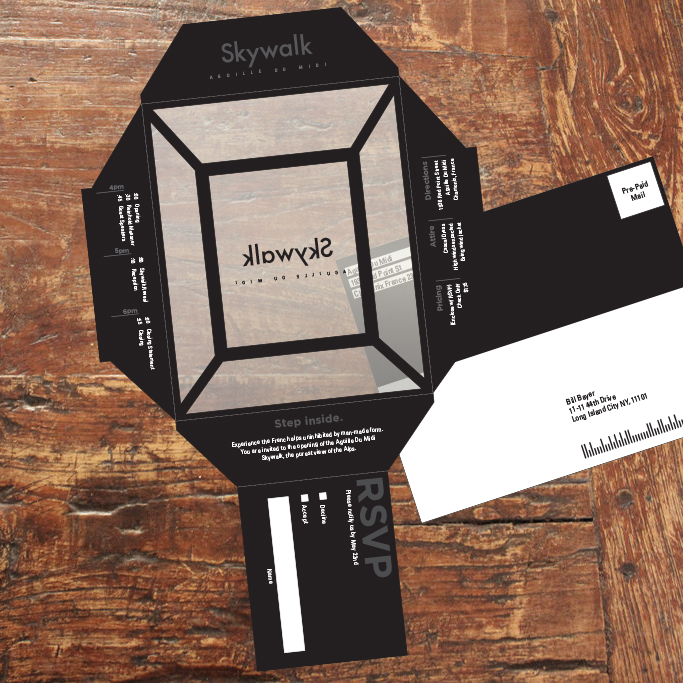
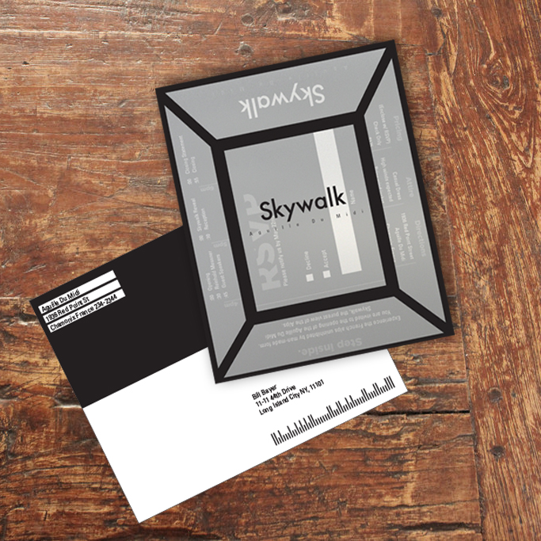
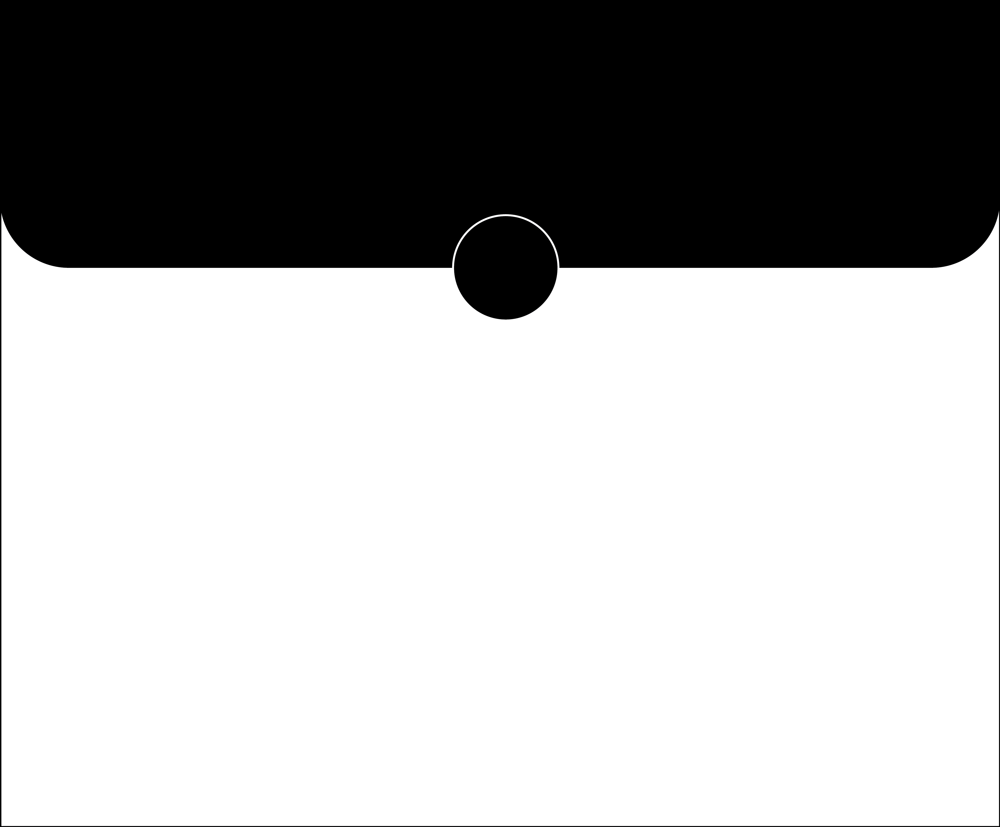
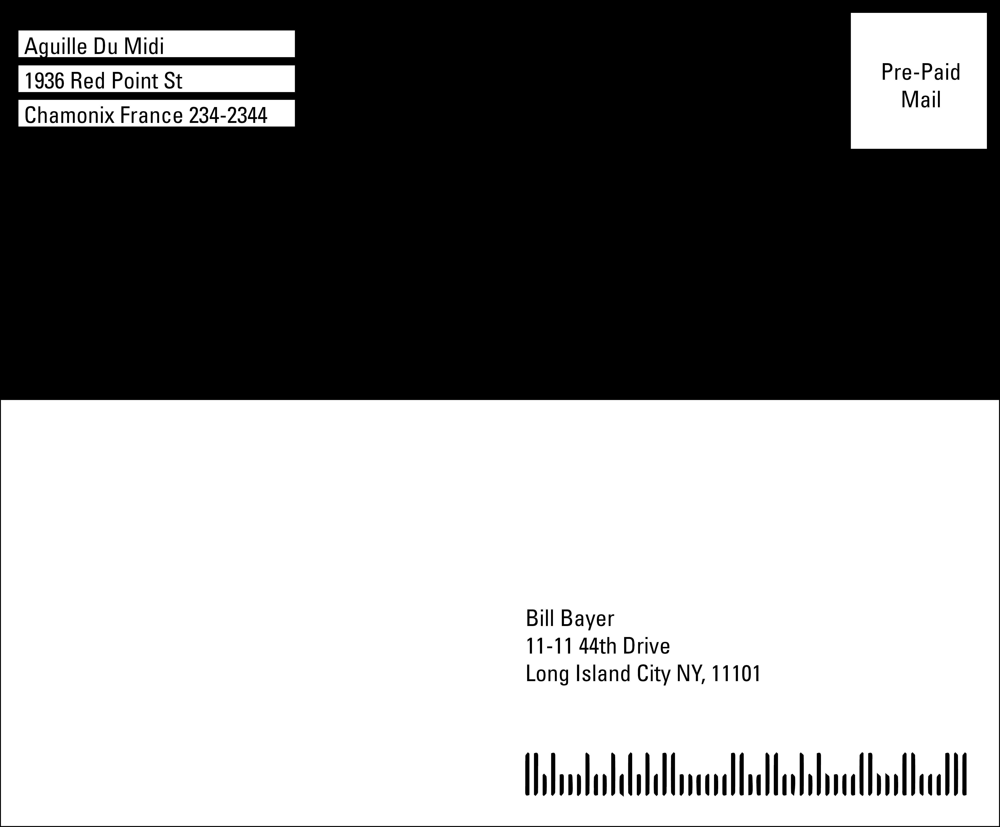

Skywalk Event Invitation
the invitation was informed by the glass box of the Skywalk. Adhering the concept of removing the element of architecture obstructing one from the mountainscape, the invitation is designed to be opened as a process of removal. Upon opening the invitation to see the information for the event, each flap reveals a section of the glass box hovering above the French Alps.

 








